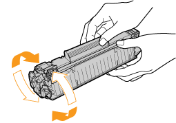
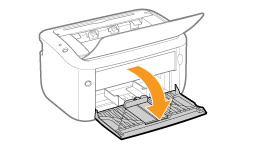

|
NOTA
|
|
Guarde los materiales de embalaje retirados
Los necesitará cuando transporte la impresora para ubicarla en otro lugar o para llevarla al servicio técnico.
Acerca de los materiales de embalaje
Los materiales de embalaje pueden diferir en su forma o posición y pueden añadirse o eliminarse sin previo aviso.
|
1
Abra la bandeja de salida.
2
Incline el papel hacia usted.

3
Sujetando la abertura (A) del lado derecho, abra la tapa superior.

4
Incline el papel hacia la parte trasera.

5
Retire el material de embalaje del interior de la tapa superior.

6
Extraiga el cartucho de tóner.

7
Agite suavemente el cartucho de tóner cinco o seis veces según se muestra en la figura para distribuir el tóner del interior del cartucho de un modo uniforme.

8
Coloque el cartucho de tóner sobre una superficie plana.
9
Retire el material de embalaje mostrado en la figura.

10
Retire la pestaña y, a continuación, extraiga la cinta de sellado (aprox. 50 cm).

|
IMPORTANTE
|
|
Precauciones al retirar la cinta de sellado
No retire la cinta de sellado tirando de ella en diagonal, hacia arriba o hacia abajo. Si se daña la cinta, podría resultar difícil retirarla completamente.
Si la cinta de sellado se detiene en la mitad, retírela del cartucho de tóner en su totalidad. Si quedara parte de la cinta dentro del cartucho de tóner, podría producirse un deterioro de la calidad de impresión.
Deseche la cinta de sellado extraída de acuerdo con la normativa local al respecto.
|
11
Retire el material de embalaje con el papel del interior de la tapa superior.

12
Instale el cartucho de tóner.
Empuje el cartucho de tóner firmemente al interior de la impresora hasta que toque la parte posterior de la impresora mientras alinea (A) en los dos lados del cartucho de tóner con las guías del cartucho de tóner del interior de la impresora.
13
Cierre la tapa superior.
 Si no puede cerrar la tapa superior Si no puede cerrar la tapa superiorAsegúrese de que el cartucho de tóner está instalado apropiadamente en la impresora. No intente cerrar la tapa superior a la fuerza, ya que podría dañar la impresora.
|
14
Abra la bandeja multiuso.

15
Retire la cinta acoplada a la impresora.

|
¡Compruebe!
|
|
Comprobación de la retirada de los materiales de embalaje
Compruebe que se han retirado completamente los siguientes materiales de embalaje.
|
 "
"